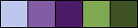
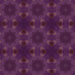
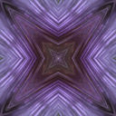
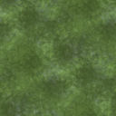
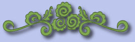

The photograph used in the title for Lesson 3 is from a clip art collection I purchased a long time ago, called "Multimedia Graphics Pack" from Media Graphics. The font used for the word "Welcome" is called 86Design and I'm not really sure where I got it but it seemed appropriate.
The object of this lesson was to make a coordinated set with background tiles, a title, a separator bar, and three buttons. This is the result.
I picked five colors from that picture to create the graphics forthis page. Here is my palette:
I made five tiles for the background design using Corel PaintShop Pro X and the colors in the palette. The first three tiles were made by starting with a selection I copied from the title graphic. Once I had that small picture, I took the following steps:
- I resized the picture to 128x128 pixels.
- Adjust > Brightness & Contrast > Brightness/Contrast... with Brightness: 20 and Contrast: 10
- Select Effects > Texture Effects > Blinds... with Width: 10, Opacity: 50, Color: #4B167, and Horizontal and Light from Left/Top, both checked.
- Effects, Reflection, Kaleidoscope, with Horizontal Offset: 0, Vertical Offset: 0, Rotation angle: 0, Scale factor: 0, Number of Petals: 8, Number of Orbits: 0, Radial Suction: 0, and Edge Mode: Repeat.
- Finally I selected Effects, Image Effects, Seamless Tileing... with Tiling Method: Corner, Direction: Bi-directional, both Horizontal and Vertical Offset: 0, Tranistion %: 50, and Corner Style: Curved. Here is the result:
The second tile started with a copy of the first. Then I used Effects, Reflectio Effects, Patern... with Horizontal Offset, Vertical Offset, and Rotation angle all 0, Scale Factor: 50, Number of Columns: 3, and Number of Rows 3. Here is the second tile:

Finally, the third tile started with the resized piece I cut from the title. There were only three steps on this one:
- I used Eye Candy 4000, Fur... with the preset "Flowing"
- Simple, Pizza Slice Mirror
- Effects, Image Effects, Seamless Tiling... with the same settings as above, except that the Tiling Method was: Mirror. Here is tile number 3:

Tile 4 was created using the two shades of green from the palette in much the same way I created the pattern tile for Lesson 2. I used the airbrush with the "sponge round medium" brush and the two shades of green for foreground and background colors. I alternatively left and right-clicked to lay down blotches of the two colors until I was satisfied and then used Effects, Image Effects, Seamless Tilling... with the same settings as for the first tile. This is the tile I used for the narrow dividing bands:

The final tile was a 4x4 pixel tile of the background color so I could be sure that the title and other graphics would have the same background color as the text.
The bar was made with a font called "Separators" and the buttons were made by cutting the central flower from the title image out and reducing it to a small enough size so that it didn't overwhelm the button. The button itself is simply a rectangle of the medium purple that has had a bevel applied to it and the text is plain old Arial to make it easy to read.
